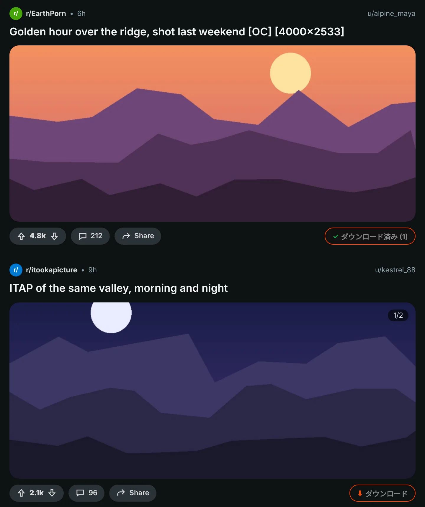
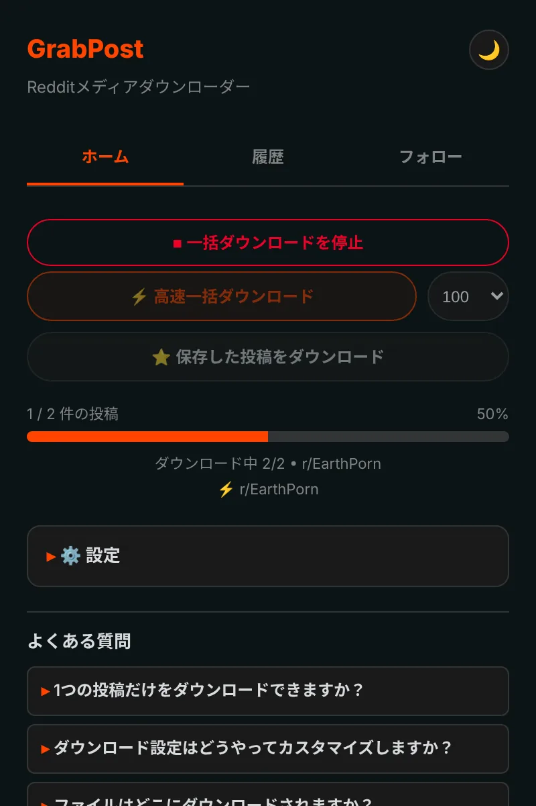
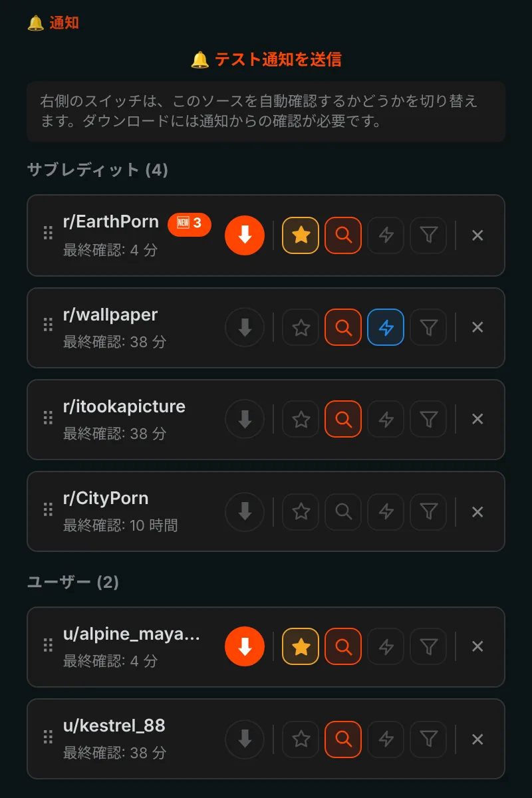
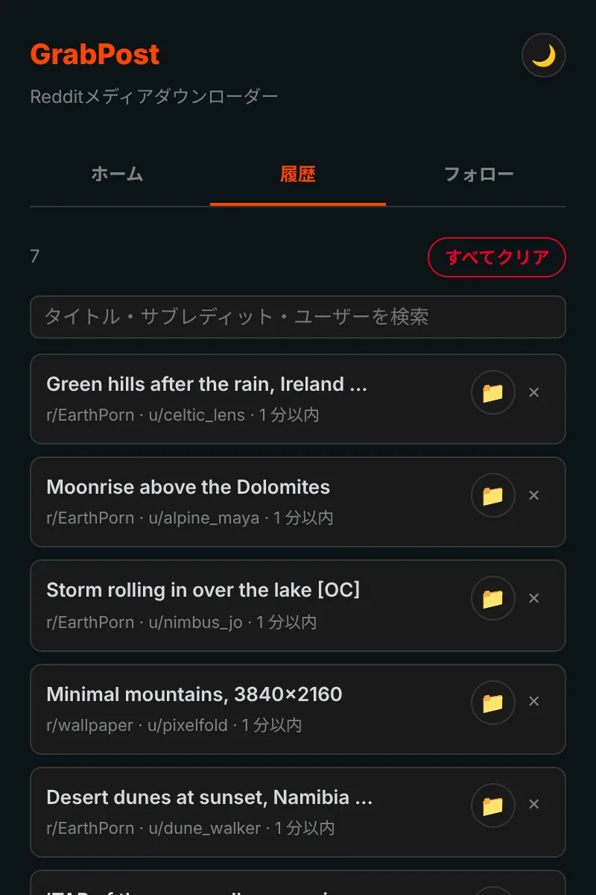

Redditのあらゆる投稿を、ワンクリックで保存。
GrabPostはRedditのすべての投稿にダウンロードボタンを追加します。動画は音声付きのまま、ギャラリーはまるごと保存。ほかの作業をしている間に、サブレディットやプロフィールをまとめてダウンロードできます。無料で、トラッキングもありません。
まだストアには公開していません。GitHubからのインストールは1分ほどで終わります。

投稿のボタンを押してみてください。
すべての投稿にボタン
オレンジのボタンは各投稿の投票・共有の列に表示されます。フィード、プロフィール、検索結果、新旧どちらのRedditでも使えます。画像、ギャラリー、GIF、Redgifs、Imgurのリンクに対応。Alt+Shift+Dで画面中央の投稿をダウンロードします。

ページ全体をまとめて
高速モードはサブレディット、プロフィール、マルチレディット、検索結果をRedditのデータから直接読み込むので、スクロールは不要です。すでに持っているものは飛ばし、以前ダウンロードした投稿に着いたところで止まります。保存済みの投稿も同じ方法でダウンロードできます。

フォローすれば、新着が届く
サブレディットやユーザーをフォローすると、新しいメディアが出たときに通知が届きます。自動ダウンロードも可能です。メディアの種類、NSFW、キーワードで絞り込めます。お気に入りは最大10件まで、最短5分ごとにチェックできます。

すべてのダウンロードを記録
履歴には保存したものが一覧になり、検索もできます。すでに持っている投稿はReddit上でマークされます。バックアップは自動で作られるので、入れ直してもリストは消えません。

細かいところまで
音声付きの動画
Redditは音声を別ファイルで保存しています。GrabPostはそれを見つけ、ブラウザの中で動画と結合します。
フォルダ名もファイル名も自由に
フォルダは {subreddit}/{user}、ファイルは {date}_{title} のようなテンプレートで指定できます。
重複しない
別のサブレディットに再投稿された同じ画像も見分けます。
IDMと一緒に使える
ダウンロードマネージャーにファイルを横取りされて、フォルダ名が無視されることはありません。
Redditに無理をさせない
Redditから待つよう求められたら、GrabPostは指定された時間だけ待ってから続けます。
15言語
拡張機能もこのページも、あなたの言語で。
何をダウンロードするかは、あなただけのもの
- 分析なし、トラッキングなし、アカウント不要
- 通信するのはRedditとそのメディアをホストするサイトだけ
- 履歴と設定はブラウザの中に保存
- GitHubでオープンソース
1分でインストール
GrabPostはまだChromeウェブストアにないため、手動でインストールします。Chrome、Edge、Brave、OperaなどのChromium系ブラウザで動作します。
- GitHubから最新の grabpost-v…zip をダウンロードし、残しておくフォルダに展開します。
chrome://extensionsを開き、右上の デベロッパーモード をオンにします。- パッケージ化されていない拡張機能を読み込む をクリックし、展開した grabpost フォルダを選びます。
- Redditを開くと投稿にオレンジのボタンが表示され、ツールバーのアイコンからGrabPostのパネルが開きます。
更新するときは、同じフォルダのファイルを置き換えて、GrabPostのカードにある再読み込みボタンを押します。設定と履歴はそのまま残ります。
Firefox：アドオンストア版を準備中です。それまではFirefox用のzipをabout:debuggingから一時的に読み込めます。
よくある質問
GrabPostは無料ですか？
はい、すべての機能が無料です。役に立ったら、開発者にコーヒーをごちそうしてください。
ファイルはどこに保存されますか？
ブラウザのダウンロードフォルダの中の、指定したサブフォルダに保存されます。初期設定は Reddit Downloads で、ファイル名はサブレディット名から始まります。
Redditへのログインは必要ですか？
保存済みの投稿と年齢制限のあるコミュニティにだけ必要です。それ以外はアカウントなしで使えます。
入れ直すと履歴は消えますか？
消えません。ブラウザの同期がオンなら、設定とフォローリストは自動で戻ります。バックアップファイルも自動で保存され、GrabPostはブラウザのダウンロード一覧から履歴を復元することもできます。
Edge、Brave、Operaでも使えますか？
はい。パッケージ化されていない拡張機能を読み込めるChromium系ブラウザなら、Chrome用のzipで動作します。
GrabPostをダウンロード
まだストアには公開していません。GitHubからのインストールは1分ほどで終わります。